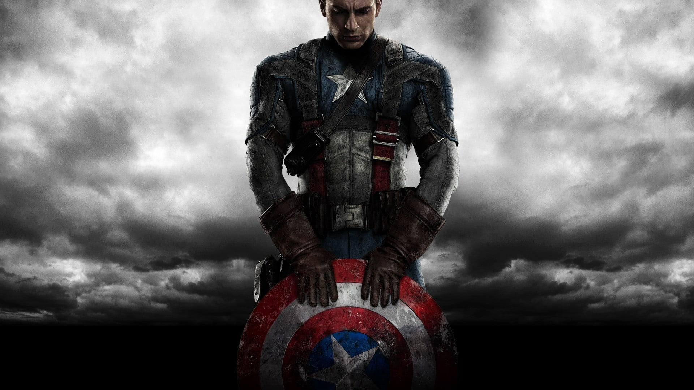

Captian America
Captain America, also known as Steve Rogers, is a super-soldier created during World War II. He was frozen in ice for decades before being revived in the modern era. As a symbol of liberty and justice, Captain America wields an indestructible shield and leads the Avengers.
Real Name: Steve Rogers
First Appearance: Captain America Comics #1 (1941)
Origin
Steve Rogers was a frail young man who volunteered for a top-secret military project to become the world's first super-soldier. Injected with the Super-Soldier Serum, he gained enhanced strength, speed, and endurance, becoming Captain America to fight against the Nazis during World War II.
Abilities and Equipment
- Super-Soldier Serum: Grants enhanced physical abilities like strength, speed, agility, and endurance.
- Indestructible Shield: A vibranium shield that Captain America uses for both defense and offense.
- Peak Human Condition: Rogers’ body operates at the peak of human potential due to the serum.
- Tactical Genius: A master strategist and leader of the Avengers.
Key Storylines
- The Winter Soldier: Cap discovers his best friend, Bucky Barnes, survived and was brainwashed as the Winter Soldier.
- Civil War: Captain America opposes government control over superheroes, leading to a confrontation with Iron Man.
- Endgame: Steve Rogers leads the Avengers in the final fight against Thanos and later passes his shield to Sam Wilson (Falcon).
Personal Life
- Love Interest: Peggy Carter, his wartime love, whom he later reunites with after time travel.
- Best Friend: Bucky Barnes (The Winter Soldier).
- Leadership: Cap is often seen as the moral compass and leader of the Avengers.
Fun Facts
- First Appearance: Captain America Comics #1 (1941), created by Joe Simon and Jack Kirby.
- Symbol of America: Captain America’s shield and suit are iconic symbols of freedom and justice.
- MCU Impact: Portrayed by Chris Evans, Captain America has been central to the MCU’s storyline.